Mulher, 31 anos de idade, primeiro lho a um mês, chega ao pronto-socorro com dor na mama. Refere ter realizado compressas quentes há dois dias e teve piora do quadro. O exame clínico e a ultrassonogra a estão representados nas imagens: Nesse caso, a conduta é indicar:
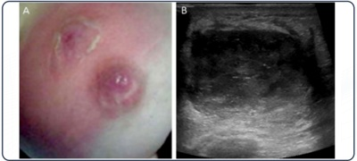
Mulher, 53 anos de idade, assintomática, menopausa aos 49 anos, cirurgia conservadora do câncer de mama há dois anos, usuário de tamoxifeno, comparece ao ginecologista para consulta anual de rotina. Nesse caso, a orientação sobre a ultrassonografia transvaginal é:
Mulher, 28 anos de idade, G1 P1I, queixa-se de dor em fossa ilíaca esquerda há uma semana. Refere ciclos menstruais regulares, usa DIU de cobre, há três anos. Apresenta dor na palpação anexial esquerda. A ultrassonogra a está representada na imagem. Nesse caso, para o melhor cuidado da paciente, a conduta adequada é indicar:
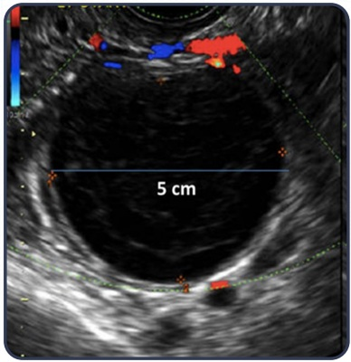
Para avaliar a e cácia da vacina quadrivalente na prevenção do câncer de colo uterino em um grupo populacional, foram acompanhadas 5.430 mulheres que haviam sido previamente vacinadas e 5.780 mulheres não vacinadas, durante um período de 10 anos. Ao nal desse período, veri cou-se incidência de câncer de colo uterino 50 vezes menor no grupo vacinado em relação ao grupo não vacinado. Trata-se de um estudo do tipo:
Mulher, 53 anos de idade, assintomática, exame físico normal, realizado há duas semanas, retorne em consulta para mostrar resultado da mamografia, conforme a imagem: Nesse caso, para o cuidado dessa paciente, a conduta é indicar:
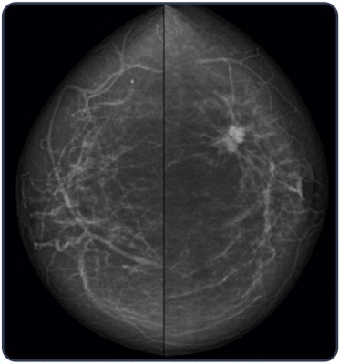
A imagem a seguir consiste em cirurgia para tratamento de incontinência urinária de esforço. Nessa imagem, qual é o tempo cirúrgico e a cirurgia, respectivamente, para o tratamento de incontinência urinária de esforço?
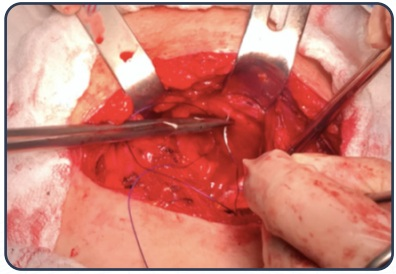
Mulher, 29 anos de idade, apresenta laudo de citologia oncótica compatível com ASC-US. Há 12 meses obteve o mesmo resultado em citologia anterior. Foi submetida à colposcopia, cuja imagem está apresentada a seguir. Nesse caso, a conduta preconizada é:
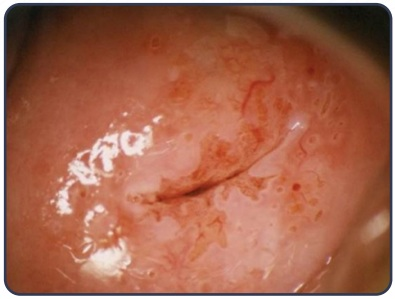
Mulher, 40 anos de idade, será submetida à histerectomia abdominal por mioma uterino. Não apresenta queixas ginecológicas no momento da consulta e trouxe documentação fotográ ca da citologia oncótica, realizada há três meses. Foi realizado exame especular e microscopia a fresco, que estão apresentadas nas imagens. Para o preparo dessa paciente para a cirurgia, a conduta adequada é:
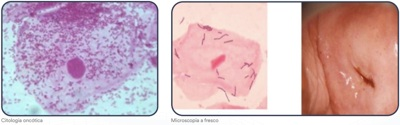
Revisar: possível letra faltando em enunciado
Nuligesta, 36 anos de idade, tenta engravidar há quatro anos, com relações sexuais quase diárias. Refere ciclos regulares desde a menarca com sintomas periovulatórios. Submetida à laparoscopia aos 24 anos com diagnóstico de endometriose; no momento, sem queixas álgicas. Na propedêutica complementar, o espermograma revela: concentração/ml = 21 milhões; volume = 4 ml, pH = 8,0; morfologia = 12%; motilidade progressiva = 45%; vitalidade = 88%; ultrassonogra a transvaginal com imagem em ovário direito com 2,0 cm conforme imagem; histerossonogra a com trompas pérvias sem deformidades e sem lesões na cavidade endometrial. Com base nas evidências científicas atuais, a conduta adequada para esse caso é:
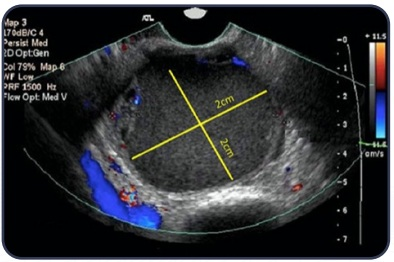
Mulher, 40 anos de idade apresenta resultado citológico de lesão intraepitelial escamosa cervical de alto grau. Foi submetida à colposcopia e o aspecto do colo uterino está demonstrado na imagem. De acordo com as diretrizes brasileiras para o rastreamento do câncer do colo do útero de 2016, a conduta é:
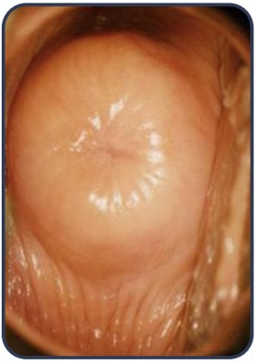
Mulher, 31 anos de idade, G1P1. Durante consulta de rotina, sem apresentar queixas, nota-se ao toque, discreto aumento do volume uterino sem dor. A ultrassonografia realizada está representada na imagem e o volume uterino total é 148 cm³. Nesse caso a conduta adequada é:
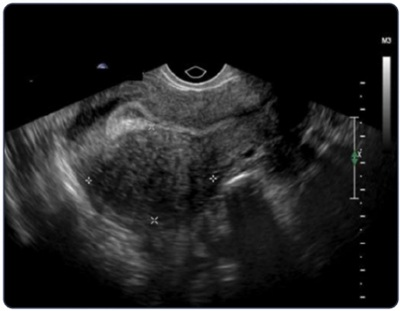
Paciente de 37 anos de idade, com queixa de ausência de pensamentos eróticos, fantasias ou motivações para o ato sexual, o que tem causado sofrimento. As causas psicossociais mais importantes foram afastadas pelo psiquiatra. A medicação que pode ser estar relacionada às queixas é:
Mulher de 28 anos de idade, nuligesta, tabagista, refere aparecimento de lesões em vulva, conforme imagem, com prurido e ardência leves, há dois meses. Nesse caso, a hipótese diagnóstica e conduta, são, respectivamente:
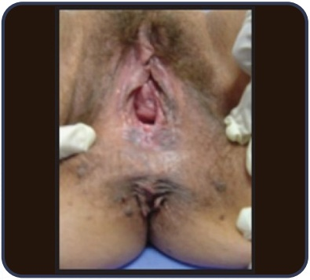
Mulher de 19 anos de idade, nuligesta, encaminhada para contracepção. Apresenta diagnóstico de lúpus eritematoso sistêmico, com anticorpo antifosfolipídeo positivo. Tem ciclos regulares, nega tabagismo, nega história de tromboembolismo prévio. Para essa paciente, o método mais indicado é:
Mulher, 38 anos de idade, nuligesta, assintomática, apresenta laudo mamográ co BI-RADS 2, conforme imagens, e ecogra a evidencia nódulo hipoecóico atrás da prótese com difícil acesso. Mãe falecida por câncer de mama aos 39 anos de idade e irmã com câncer de mama aos 42 anos de idade. Para prosseguir com a investigação, o próximo exame a ser indicado é a:
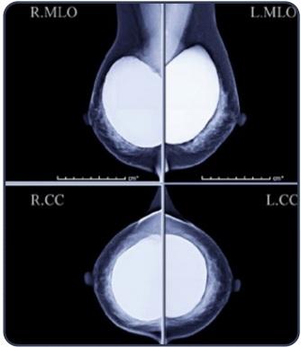
Revisar: possível letra faltando em enunciado
Mulher, 30 anos de idade, está preocupada com o resultado de seu exame citológico de prevenção de câncer de colo do útero, cujo laudo foi ASC-US. Os exames anteriores sempre foram normais. Gostaria de saber se está com HPV e por isso foi realizada pesquisa para HPV 16 e 18. O resultado foi positivo para o genótipo 16. Nesse caso, a conduta adequada é solicitar:
Mulher, 29 anos de idade, infértil há um ano, relata ciclos menstruais a cada 30 dias, com uxo de oito dias. Realizou histeroscopia e histerossalpingogra a conforme as imagens (Cotte positivo bilateralmente). O espermograma do esposo é normal. O próximo passo para que essa paciente possa engravidar é:
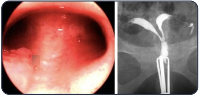
Mulher, 42 anos de idade, será submetida a histerectomia vaginal devido a sangramento uterino anormal. Não apresenta outras comorbidades. Nesse caso, a profilaxia antimicrobiana preconizada consiste em usar:
Mulher, 54 anos de idade, na pós-menopausa, apresenta polaciúria, noctúria e perda insensível de urina. Nega perda aos esforços e o exame clínico é normal. Foi indicado o tratamento visualizado na imagem para o controle da(o):
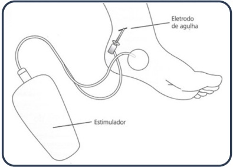
Paciente com 22 anos de idade, G3, P2, solicita anticoncepção no pós-parto imediato com DIU T de cobre. Tratou sí lis na gestação, apresentou DIP com 14 anos e é positiva para HIV, com carga viral negativa. Nesse caso, o DIU de cobre:
A lesão causada durante cirurgia pélvica, demonstrada na estrutura anatômica identi cada com a letra A na imagem, pode causar:
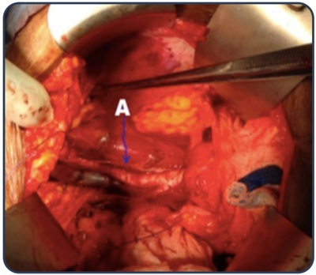
Mulher, 28 anos de idade, queixa-se de lesões em região genital há quinze dias, conforme a imagem apresentada. É HIV positiva e fez tratamento para sífilis há quatro meses. O resultado do VDRL realizado há um mês apresenta titulação 1:16. Nesse caso, o diagnóstico provável e o tratamento são, respectivamente:
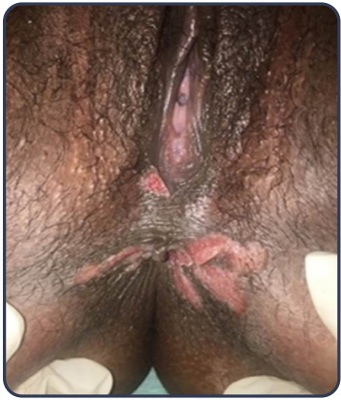
Mulher, 29 anos de idade, teve relação desprotegida no 11º dia do ciclo menstrual e não quer engravidar. Para essa paciente, a conduta adequada do ginecologista do pronto atendimento é prescrever:
O gráfico apresentado na imagem representa o perfil hormonal durante um ciclo menstrual normal. O hormônio representado como número "1" corresponde a:
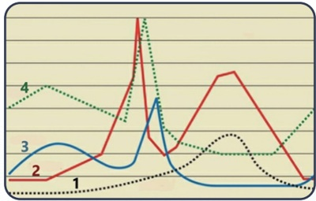
Mulher, 22 anos de idade, trouxe o resultado do exame de preventivo, cujo laudo pode ser representado pelo aspecto demonstrado na imagem. De acordo com as diretrizes brasileiras para o rastreamento do câncer do colo do útero de 2016, a conduta é:
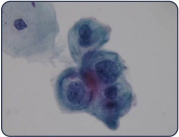
Mulher, 55 anos de idade, G3 P3, refere bola na vagina há seis meses, que piora aos esforços. Nega incontinência urinária ou anal. Na imagem está demonstrado o exame físico ao repouso. Para melhor cuidado dessa paciente, a conduta é indicar:
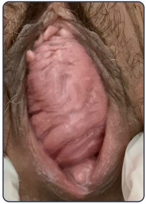
Mulher, 25 anos de idade, solicita orientação contraceptiva. Gl PI, relata aumento de 20 kg na última gestação e vem mantendo ganho de peso progressivo desde então. Apresenta útero bicorno e ciclos menstruais regulares, sem uso de medicações. Atualmente utiliza diafragma como método anticoncepcional. Exame físico: PA = 120/80 mmHg, IMC = 31 kg/m², mamas e exame ginecológico sem particularidades. Nesse caso, a orientação é:
Mulher, 69 anos de idade, G3P3, menopausa 52 anos, apresentou episódio único de sangramento vaginal que cessou espontaneamente. O achado da histeroscopia diagnóstica está representado na imagem. Nesse caso, para adequado cuidado da paciente, a conduta é indicar:
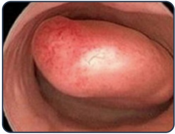
Mulher, 22 anos de idade, nuligesta, queixou-se de dor em hipogástrio há três dias, com dor à mobilização do colo uterino e corrimento cervical opaco. Usa como método contraceptivo o DIU (há dois meses) e referia última menstruação há seis dias. O beta-hCG era negativo e a ultrassonogra a transvaginal normal. Iniciou ceftriaxona e doxiciclina e retorna após três dias, com febre (38,5°C) e sem melhora da dor. Ultrassonografia atual sem alterações. Nesse caso, a conduta adequada é:
Mulher, 68 anos de idade, vem à consulta encaminhada pelo siatra. Menarca aos 14 anos. G3 P3. Usou DIU pois não se adaptava à Pilula. Menopausa aos 47 anos, assintomática. Nega uso de terapia hormonal. Tabagista 20 cigarros/dia dos 20 aos 40 anos. Ao exame PA 120/80 mmHg, IMC 23 kg/m² . Mamas e axilas sem alteração. Abdômen sem massas. Exame ginecológico com atrofia vaginal, sem outras alterações. Considere a imagem a seguir. Pode-se concluir que a paciente:
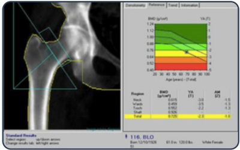
Mulher, 31 anos de idade, nuligesta, apresenta diagnóstico histopatológico de carcinoma escamoso do colo uterino. A lesão é de 2 cm com paramétrios e fórnices vaginais livres. Nesse caso, o tratamento indicado é:
Mulher, 59 anos de idade, G3 P3, menopausa há 14 meses, queixa-se de fogachos noturnos que a incomodam muito. Nega tabagismo ou outros vícios. Nega doenças crônicas conhecidas. Exame físico: PA 110 x 80 mmHg; FC 88 bpm; IMC 37 kg/m² exame de mamas e ginecológico sem alterações. A mamogra a e exames bioquímicos para rastreamento de doenças metabólicas apresentam resultados normais. Nesse caso, a conduta adequada é prescrever:
Mulher, 29 anos de idade, nuligesta, no exame citopatológico apresenta diagnóstico de adenocarcinoma in situ. O exame colposcópico apresenta colo com orifício externo puntiforme, JEC endocervical e ausência de lesões visíveis. O próximo passo no cuidado dessa paciente é indicar:
Mulher, 20 anos de idade, está com a menstruação atrasada. Refere menarca aos 11 anos e ciclos regulares, sexarca aos 15 anos, fez uso de pílula oral combinada até os 18 anos, quando quis colocar DIU. Usa paroxetina há um ano. DUM há 14 meses. Ao exame físico: peso 60 kg, altura 1,69 m, PA 120/80 mmHg, exame de mamas e ginecológico normais (M e P). Exames laboratoriais demonstram: beta hCG negativo, FSH 44 mUl/mL, TSH 1,2 mU/L, prolactina 10 ng/mL. Para essa paciente, o próximo passo é solicitar:
Mulher, 36 anos de idade, G3 P3 (cesáreas) AO, foi submetida a laqueadura tubária há seis anos, na última cesariana. Queixa-se de irregularidade menstrual há um ano, sendo a última menstruação há quatro meses e galactorreia há oito meses. Na propedêutica complementar, confirmou-se elevação dos níveis de prolactina (105 ng/dl; VN = <25 ng/dl), FSH 6,8 mlU/ml (VN = 2,8 a 10,5 mlU/ml) e beta-hCG negativo. Para a próxima etapa na condução desse caso, a conduta adequada é:
Adolescente de 17 anos de idade apresenta quadro clínico de amenorreia primária. Ao exame físico, apresenta infantilismo sexual. Dosagem de FSH acima do esperado para idade. Nesse caso, outro achado provável é:
Mulher, 18 anos de idade, refere nódulo em mama direita há seis meses, com aumento do volume no período pré-menstrual. Nessa história familiar ou pessoal de neoplasias malignas. No exame físico, palpa-se nódulo de 2 cm em quadrante superior externo de mama direita, discretamente doloroso, bem delimitado imóvel. A ultrassonografia está representada na imagem. Nesse caso a conduta é:
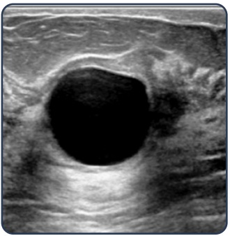
Mulher, 32 anos de idade, nuligesta, relata ciclos longos, com períodos de amenorreia. No momento não deseja gestar, mas tem atividade sexual frequente. Ao exame físico: IMC 24 kg/m², sem acne, escore de Ferriman Gallwey modi cado 12. Ultrassonografia transvaginal com útero de dimensões normais, miométrio homogêneo, endométrio de 14 mm, ovário direito medindo 38 x 40 mm e ovário esquerdo com 41 x 39 mm, ambos com múltiplos folículos periféricos medindo entre 2 e 9 mm. Exames laboratoriais recentes: TSH 2,1 um/L; prolactina 10 ng/mL; glicemia de jejum 87 mg/dL ; HbA1c 5%. Nesse caso, a conduta é prescrever:
Revisar: possível letra faltando em enunciado
Mulher, 45 anos de idade, G2P2, portadora de mutação patogênica do gene BRCA1, solicita orientação sobre prevenção do câncer de mama. Para o melhor cuidado dessa mulher, a recomendação é indicar:
Adolescente, 17 anos de idade, refere amenorreia primária e fenótipo apresentado na imagem. Ultrassonogra a pélvica evidencia útero hipotró co, endométrio de 1 mm, ovários medindo 1,5 x 1,8 cm, sem imagens císticas. Exames subsidiários: prolactina 13 ng/dL; FSH: 0,3 mU/mL; estrogênio: 3 pg/mL; TSH 1,9 mcU/mL; cariótipo 46XX; ressonância de crânio normal. O próximo passo da propedêutica para essa paciente e realizar:
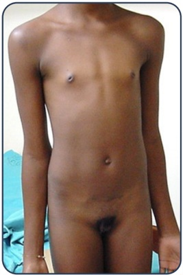
Revisar: possível letra faltando em enunciado
Mulher, 20 anos, em acompanhamento por síndrome dos ovários polícisticos, irregularidade menstrual e hirsutismo. Utiliza etinilestradiol e drospirenona há 12 meses, em regime 24/4, com melhora da acne e irregularidade menstrual, mas apesar da melhora discreta, ainda reclama de hirsutismo, que pode ser visto nas imagens. Para atender as queixas dessa paciente, a conduta adequada é:
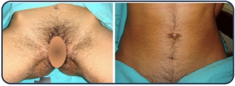
Adolescente, 18 anos de idade, ainda não menstruou. Exame físico: peso 60 kg, altura 1,69 m, fenótipo feminino, com caracteres sexuais secundários conforme a imagem. Exame genital: hímen íntegro, mensuração da vagina .com histerômetro) 8,5 cm. Ultrassonogra a transvaginal: útero de 12,2 cm³ , ovários não visualizados. Idade óssea de 11 anos. Exames laboratoriais: FSH 56,7 mUl/mL; Estradiol < 12 pg/mL; perfil androgênico, prolactina e função tireoidiana normais; cariótipo 46XY. Nesse caso, o tratamento é:
Mulher, 25 anos de idade, nuligesta, em seguimento por síndrome de Kallmann diagnosticada aos 17 anos, após quadro de amenorreia primária. Desde então vem fazendo terapia hormonal, apresentando ciclos menstruais regulares, sem outras queixas. No momento vem à consulta manifestando desejo de concepção. Para o cuidado adequado dessa paciente, a conduta é:
Mulher, 72 anos de idade, refere prurido vulvar há mais de três anos. Exame físico: aspecto da vulva conforme a imagem. Nesse caso, o diagnóstico e a conduta são, respectivamente:
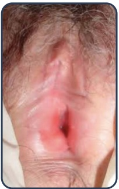
Mulher de 63 anos de idade, submetida a histerectomia total e salpingooforectomia bilateral. O anatomopatológico mostrou adenocarcinoma endometrióide de endométrio grau II. A lesão in ltra 50% da espessura do miométrio. In ltra também o estroma do colo uterino. Nesse caso, a conduta adequada é:
Mulher, 61 anos de idade, nuligesta, menopausa aos 55 anos, queixa-se de sangramento vaginal de moderado volume há três dias. Usa metformina e nega ter recebido terapia hormonal. Ao exame físico: PA 140 x 90 mmHg, FC 88 bpm, IMC = 38 kg/m2. A ultrassonogra a transvaginal evidenciou útero AVF com 150 cm3, ecoendometrial com 10, 8 mm e ovários não visíveis. A histeroscopia visualizou endométrio sem lesões focais, e biópsia realizada apresentou hiperplasia glandular sem atipias. O sangramento moderado persiste após a histeroscopia. Nesse caso, para o adequado cuidado da paciente, a conduta é indicar:
Mulher, 57 anos de idade, G1 P1, há quatro anos pós-menopausa, apresenta perda urinária aos médios esforços, que começou há três anos. Nunca tratou a incontinência urinária. O exame apresenta POP-Q: Aa 0, Ba 0, C -4, Ap -1, Bp 0, força muscular grau 3 e não foi visualizada perda urinária à manobra de Valsalva. Nesse caso, o tratamento indicado é:
Mulher, 35 anos de idade, G2, P2, escolheu o DIU T de cobre com método contraceptivo. Nega alergias medicamentosas. Para o procedimento de inserção do DIU nessa paciente, é adequado:
Mulher, 23 anos de idade, queixa-se de corrimento vaginal branco, há vários meses. Na bacterioscopia realizada, observam- se lactobacilos ++++/4, núcleos isolados e ausência de leucócitos. O teste das aminas é negativo e o pH vaginal é 4,0. Nesse caso, o provável diagnóstico é:
Mulher, 49 anos de idade, refere prurido vulvovaginal intenso há cinco dias. Relata quatro episódios semelhantes no último ano. As imagens correspondem ao exame da genitália externa e exame a fresco do conteúdo vaginal. Nesse caso, para o melhor cuidado da paciente, a conduta adequada é: Respostas: 1 12 23 34 45
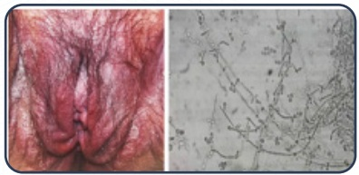